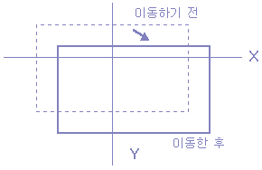

위치 변환(Shift Operation)
이번에는 영상의 위치를 변환하는 것에 대하여 알아보자.
아래 [그림 8]에서와 같이 우측으로 x0, 아래쪽으로 y0가 움직이기 위해서는 다음의 변환식을 이용한다.
X = x + x0 , Y = y + y0 [식 4]
이것의 역변환은 다음과 같다.
x = X - x0 , y = Y - y0 [식 5]

[그림 8] 영상 데이터의 위치 변환
이 과정을 프로그램으로 살펴보면 다음과 같다.
¡ 좌표를 이동하는 함수
/***** function for shift operation*********/
void Shift(float zx, float zy){
int i, j, buf1, buf2;
int xs=SIZE/2;
int ys=SIZE/2;
float x, y, p, q;
int data;
for (i=-ys; i< ys; i++) {
for (j=-xs; j< xs; j++ {
y=i-py;
/* 역 변환 */
x=j-px;
if (y>0) buf1 = y;
else buf1 = y - 1;
if (x>0) buf2 = x;
else buf2 = x - 1;
q = y - buf1;
p = x - buf2;
/* -SIZE/2< buf1< SIZE/2, -SIZE/2< buf2< SIZE/2의 경우 */
if ((buf1 > -ys) && (buf1< ys) && (buf2 > -xs) && (buf2< xs))
data = RetrunData(p, q, buf1, buf2, xs, ys);
else
data = 0; /* 범위에 들어가지 않는 경우 */
if (y_bnd>=-ys) && (y_bnd< ys) && (x_bnd >=-xs) && (x_bnd< xs))
if (data< 0) data = 0; /* data가 0 이하 255 이상인 경우 */
if (data >255) data=255;
image_out[i+ys][j+xs]=data;
/* 그외의 경우는 data를 mapping 한 위치에 저장한다. */
} }}
위 프로그램에 의한 결과 영상을 살펴보면 [그림 9]와 같다.
 (a) 원영상 (b) shift 영상
[그림 9] shift 결과 영상
(a) 원영상 (b) shift 영상
[그림 9] shift 결과 영상